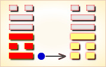
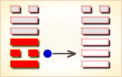
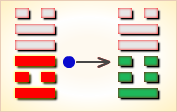
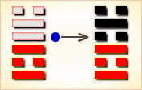

周易第49卦_革卦(泽火革)_兑上离下
如有疑问互相交流，微信：470283584
周易第49卦详解
革卦原文
革。己日乃孚。元亨利贞。悔亡。
象曰：泽中有火，革。君子以治历明时。
白话文解释
革卦：祭祀之日用俘虏作人牲，亨通，吉利的卜问。没有悔恨。
《象辞》说：本卦外卦为兑，兑为泽；内卦为离，离为火。内蒸外煏，水涸草枯，如同水泽之中，大火燃烧，这是革卦的卦象。君子观此卦象，了解到泽水涨落，草木枯荣的周期变化，从而修治历法，明确时令。
《断易天机》解
革卦兑上离下，为坎宫四世卦。革就是需要变革，提醒占筮者需要变革才会更进一步。
北宋易学家邵雍解
事多变动，坚守正道；顺天应人，实施变革。
得此卦者，凡事均在变动之中，宜去旧立新，以应革新之象，则会吉祥。
台湾国学大儒傅佩荣解
时运：改变之时，顺时而动。
财运：消耗过多，迁地贸易。
家宅：小心防火；改娶之象。
身体：肾水干枯，肝火上升。
传统解卦
这个卦是异卦（下离上兑）相叠。离为火、兑为泽，泽内有水。水在上而下浇，火在下而上升。火旺水干，水大火熄。二者相生亦相克，必然出现变革。变革是宇宙的基本规律。
大象：兑为金，被离火所烧，变革之象。
运势：凡事均在变动之中，宜去旧立新，以应革新之象。
事业：正处在转折的关键时刻，必须密切注意各种信息，认真思考。首先巩固自己的地位，完善个人的行为。时机成熟后，立即行动，积极进行变革。但应注意动机纯正，手段正当，不保守也不妄进，事业必定发达。
经商：市场竞争十分激烈。为了立于不败之地，一定要敢于大胆求新，适时改变自己的经营方向，受到挫败，马上总结经验，重新奋起，拓展商业活动，但要注意竞争方式。
求名：首先要努力提高自己，完善个人的学识和品德。同时，服从上级指挥搞好工作，二者的关系一定要得到妥善处理。
婚恋：可能会出现一些节外生枝的麻烦事，应冷静处理，感情专注。
决策：十分吉利、顺利。以自己的聪明才智，顺应形势，根据时代特点，依理而动，变革渐合时宜的事物，壮大自己的事业。但应谨慎，时机不成熟不可妄动，尤忌急功近利。行动之前应三思而行。
台湾张铭仁解卦
革：表示该改革、革新之时候了。主是个状况卦，吉凶未定。事事情况虽不稳定、明朗，但只要有心改变，重新再来则成功机会大。一切不可固执不化、不变通。
解释：革旧布新。
特性：性急，反传统，爱改变现象，创新事物，旅行，变换工作，口齿伶俐。
运势：不稳定，多变化之际，凡事均有所变动，故需弃腐朽而立新者，宜下决心改革。但仍须谨慎改革之道，善改则吉，恶改则凶。
家运：多事之秋。慎重改变自己的生活方式，方能建立新的气象。
疾病：病情多变，宜改换求医方法，注意心脏，眼目和咽喉之疾。
胎孕：胎安。
子女：子女与母亲有缘薄之象。
周转：要及时改变方针。
买卖：改变经营方式为宜。
等人：因中途变卦不会来。
寻人：速改变方向，向西、南方寻找。
失物：因有弃旧迎新之意，故相信不能寻回。
外出：十分顺利，积极活动，扩大人际关系。
考试：越来越好。
诉讼：要改变旧有对策，才可圆满解决。
求事：不可守旧，改变职事有利之时机也。宜速把握良机。
改行：大吉大利。
开业：大吉大利。
周易第49卦初九爻详解
初九爻辞
初九。巩用黄牛之革。
象曰：巩用黄牛，不可以有为也。
白话文解释
初九：用黄牛的皮革束紧加固(战车)。
《象辞》说：用黄牛的皮革束紧加固，说明其人被紧紧束缚不能有作为。
北宋易学家邵雍解
平：得此爻者，宜谨守常规，不可存非分之想。做官的不宜进取，切不可怀出位之念。
台湾国学大儒傅佩荣解
时运：最好固守，再等几年。
财运：先立基础，勿图更张。
家宅：新造之屋；待婚三年。
身体：中腹胀硬，消积健脾。
初九变卦

初九爻动变得周易第31卦：泽山咸。这个卦是异卦（下艮上兑）相叠。艮为山；泽为水。兑柔在上，艮刚在下，水向下渗，柔上而刚下，交相感应。感则成。
周易第49卦六二爻详解
六二爻辞
六二。己日乃革之。征吉，无咎。
象曰：己日革之，行有嘉也。
白话文解释
六二：祭祀的日期要改变。随之要重新卜问征战的日期，结果卜得吉兆，没有灾难。
《象辞》说：祭祀的日期要改变，大概是因为将有喜庆之事。
北宋易学家邵雍解
吉：得此爻者，多喜庆之事，做官的会升迁。
台湾国学大儒傅佩荣解
时运：配合吉日，建立功名。
财运：择吉开张，生意畅旺。
家宅：择日修宅；可称佳偶。
身体：即将痊愈。
六二变卦

六二爻动变得周易第43卦：泽天夬。这个卦是异卦（下乾上兑）相叠。乾为天为健；兑为泽为悦。泽气上升，决注成雨，雨施大地，滋润万物。五阳去一阴，去之不难，决（去之意）即可，故名为夬（guài），夬即决。
周易第49卦九三爻详解
九三爻辞
九三。征凶，贞厉。革言三就，有孚。
象曰：革言三就，又何之矣。
白话文解释
九三：出征，吃了败仗，卜问得凶兆。但是，只要振奋精神，整顿装备，重新开战，则能转败为胜，生擒强敌。
《象辞》说：犯人屡次推翻供辞，只得反复进行审讯，这说明抵赖无用，只能招出实情。
北宋易学家邵雍解
凶：得此爻者，多事之时，谨慎而行。做官的有躁动失政之忧。
台湾国学大儒傅佩荣解
时运：再三考虑，可免后患。
财运：信用良好，才可获利。
家宅：三迁为宜；三人为媒。
身体：三日可愈。
九三变卦

九三爻动变得周易第17卦：泽雷随。这个卦是异卦（下震上兑）相叠，震为雷，为动；兑为悦，动而悦就是“随”。随指相互顺从，己有随物，物能随己，彼此沟通。随必依时顺势，有原则和条件，以坚贞为前提。
周易第49卦九四爻详解
九四爻辞
九四。悔亡，有孚，改命，吉。
象曰：改命之吉，信志也。
白话文解释
九四：没有悔恨。至于占问战争，则小有战果，如果改帅易将，则将大吉。
《象辞》说：九四爻辞讲改帅易将之所以吉利，因为这样能使有才德的人施展抱负。
北宋易学家邵雍解
平：得此爻者，会有转变，有收获。做官的会有升迁之机。
台湾国学大儒傅佩荣解
时运：转换跑道，好运自来。
财运：重兴旧业，可以得利。
家宅：整建有利；再婚有利。
身体：改求良医。
九四变卦

九四爻动变得周易第63卦：水火既济。这个卦是异卦（下离上坎）相叠。坎为水，离为火，水火相交，水在火上，水势压倒火势，救火大功告成。既，已经；济，成也。既济就是事情已经成功，但终将发生变故。
周易第49卦九五爻详解
九五爻辞
九五。大人虎变，未占有孚。
象曰：大人虎变，其文炳也。
白话文解释
九五：王公大人赫然斯怒，化柔弱为威猛，不用卜占，即知将大获胜仗。
《象辞》说：王公赫然斯怒，威猛如虎，说明其人仪表威严，光采照人。
北宋易学家邵雍解
吉：得此爻者，时运转好，多吉利之事。做官的晋升有望。
台湾国学大儒傅佩荣解
时运：大运来到，得意非凡。
财运：订好价钱，自可获利。
家宅：不利迁动；须防不贞。
身体：肝火浮动，不药可愈。
九五变卦
九五爻动变得周易第55卦：雷火丰。这个卦是异卦（下离上震）相叠，电闪雷鸣，成就巨大，喻达到顶峰，如日中天。告戒：务必注意事物向相反方面发展，盛衰无常，不可不警惕。
周易第49卦上六爻详解
上六爻辞
上六。君子豹变，小人革面。征凶，居贞吉。
象曰：君子豹变，其文蔚也。小人革面，顺以从君也。
白话文解释
上六：君子精神振奋，但基层官兵一反常态。筮遇此爻，占问征伐，则凶险。卜问居处则吉利。
《象辞》说：君子精神振奋，说明其仪态清朗雍容。小人洗心革面，说明小人去恶从善，服从君上。
北宋易学家邵雍解
平：得此爻者，安分守己则是非不扰。做官的进取者会晋升，离退休者会功成身退。
台湾国学大儒傅佩荣解
时运：守成为宜，功成身退。
财运：名利兼收，知足常乐。
家宅：居之得安；多求必应。
身体：静养修心。
上六变卦
上六爻动变得周易第13卦：天火同人。这个卦是异卦（下离上乾）相叠，乾为天，为君；离为火，为臣民百姓，上天下火，火性上升，同于天，上下和同，同舟共济，人际关系和谐，天下大同。